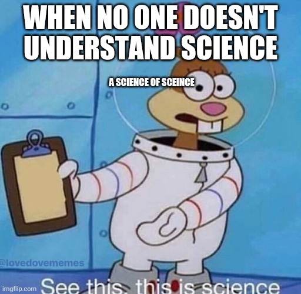
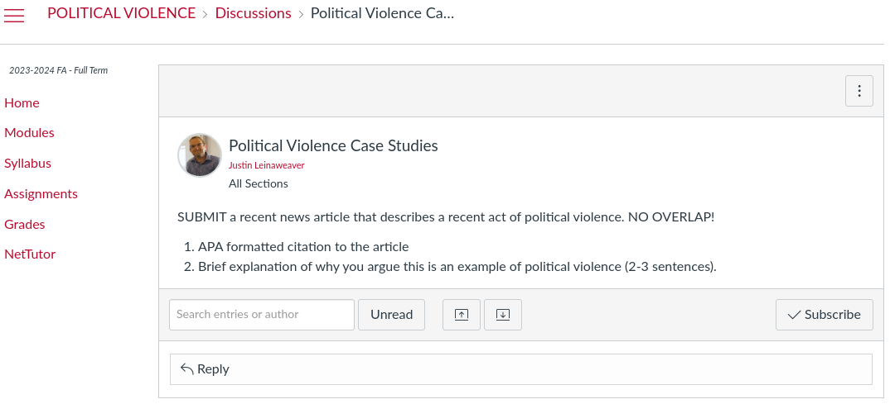

Today’s Agenda
Section 1: Introducing the Challenge
- Using case studies to improve our definition of “political violence”
Justin Leinaweaver (Fall 2025)
Defining our Key Concepts
“Political Violence”
“Strategy”
How do we explore political violence “scientifically”?
Scientific Method
Goal is inference
Procedures are public
Uncertain conclusions
Content is method

How do we explore political violence “scientifically”?
How do we explore political violence “scientifically”?
How do we explore political violence “scientifically”?

How do we explore political violence “scientifically”?
For Today
Prepare the Case Studies for Analysis
1. What is the specific act in your case?
Prepare the Case Studies for Analysis
2. Why is this specific act an example of “politics”?
Prepare the Case Studies for Analysis
3. Why is this specific act an example of “violence”?
How do we explore political violence “scientifically”?

For Next Class
Tilly, C. (2003). Varieties of Violence. In The Politics of Collective Violence (pp. 1–25). Cambridge, UK: Cambridge University Press.